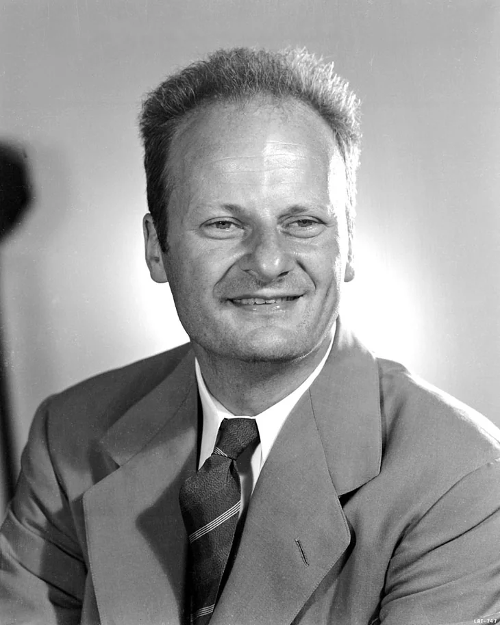
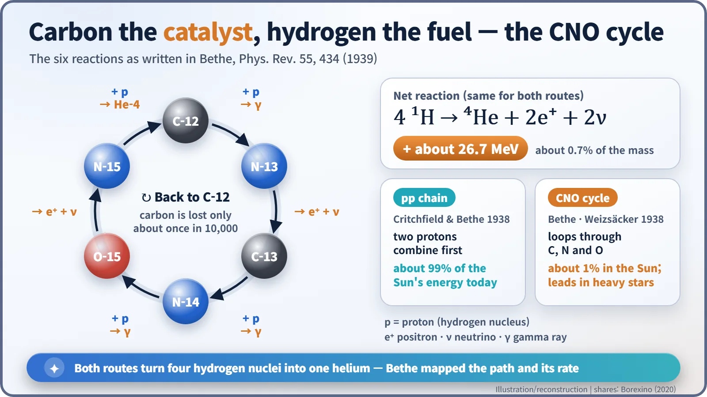
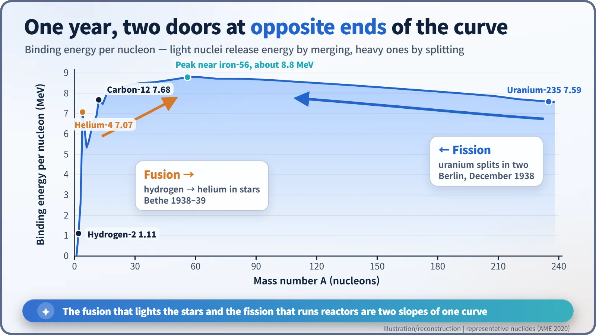

Nuclear History · 058
A Star's Secret in a Footnote — Hans Bethe's Theory of Stellar Fusion (1938–1939)
Four protons become one helium nucleus by two routes, and a $500 prize for unpublished work explains why the paper waited until March 1939.
At a small Washington conference in March 1938, the refugee physicist Hans Bethe took up the question of what powers the stars. Within about six months he had worked out two routes by which hydrogen becomes helium, the proton–proton chain and the carbon–nitrogen–oxygen (CNO) cycle, and checked them against the brightness of real stars. His paper, delayed so that it could win a prize for unpublished work, appeared on 1 March 1939, just as fission was being discovered at the other end of the binding-energy curve.
A footnote with a story
Open volume 55 of the American journal Physical Review, dated 1 March 1939, to a 23-page paper called "Energy Production in Stars". At the foot of the first page sits a small asterisk: "Awarded an A. Cressy Morrison Prize in 1938, by the New York Academy of Sciences." Why would a physics paper mention a prize? Follow that footnote and you arrive at the moment humanity first got a concrete answer to an old question: what do the stars actually burn? [1]
The books balanced, but the transactions were blank
The idea that stars run on hydrogen was already two decades old. In 1920 it had been pointed out that four hydrogen atoms weigh slightly more than one helium atom, and that the missing mass could become starlight through E = mc². In 1929 Robert Atkinson and Fritz Houtermans used quantum tunnelling — the chance that a particle slips through a barrier it seemingly cannot climb — to show that nuclear reactions inside stars were possible at all. Yet nobody could say which nuclei met which, and in what order, to make helium. The ledger balanced; the list of transactions was empty. [3]
March 1938: a small meeting in Washington
The person who filled in the blanks was a refugee. Hans Bethe (1906–2005) was born in Strasbourg, then part of Germany. In 1933, after the Nazis took power, he lost his post at the University of Tübingen because his mother was of Jewish descent. After a spell in Britain he reached the United States in February 1935 and settled at Cornell University, where his sweeping reviews of nuclear physics soon earned the nickname "Bethe's bible". [3]

In March 1938 George Washington University and the Carnegie Institution's Department of Terrestrial Magnetism held the Fourth Washington Conference on Theoretical Physics; the opening day is usually given as 17 March. The organiser, George Gamow, chose the theme of the sources of stellar energy. Bethe, who did not consider himself an astrophysicist, is said to have hesitated until Edward Teller talked him into coming. His paper later acknowledged that "these investigations originated at the Fourth Washington Conference on Theoretical Physics". [1]
Two routes: a handshake and a carousel
Bethe found two answers. The first is the proton–proton (pp) chain. It starts when two protons (hydrogen nuclei) collide and combine into deuterium. That first step was calculated with Charles Critchfield, a graduate student of Gamow's, and published in 1938. The reaction is extremely rare for any single pair of protons, but a star contains so many of them that it is enough. [2]
The second is the carbon–nitrogen–oxygen (CNO) cycle. Carbon-12 captures a proton and becomes nitrogen-13; nitrogen-13 emits a positron and becomes carbon-13; and so on through six steps, until nitrogen-15 takes in one last proton, throws off a helium-4 nucleus and turns back into carbon-12. Like a fairground carousel, the carbon comes back to where it started; the only thing used up is four protons. According to the paper, carbon drops out of the cycle only "about one in 10,000" times. Something that speeds a reaction without being consumed is a catalyst. [1]

Either way, four protons become one helium nucleus, and about 0.7% of their mass — about 26.7 MeV — is released as energy. Bethe did not stop at the route. He calculated how fast the reactions run at different temperatures and compared the result with how bright real stars are. To match the Sun's output, he found, its centre had to be at 18.5 million degrees; the standard equations of stellar structure gave 19 million. The numbers nearly agreed. [1]
A prize only for unpublished papers — and $500
The paper was received on 7 September 1938, roughly six months after the conference. Then Bethe's graduate student Robert Marshak pointed out that the New York Academy of Sciences was offering a prize for an unpublished paper on stellar energy. Bethe asked the journal to hold his manuscript, entered, and won $500. That is why the paper appeared only in March 1939, footnote and all. Bethe later recalled that the money was very useful at the time. According to a story often told, it helped pay for his mother to leave Germany, though accounts differ on exactly how it was spent and how much was needed. [4]
In the same year, 1938, the German physicist Carl Friedrich von Weizsäcker independently proposed the same cycle. He did not, however, work out its reaction rates or how strongly they depend on temperature. That is why the loop is also called the Bethe–Weizsäcker cycle. [3]
The one thing Bethe got wrong
Interestingly, Bethe concluded that the CNO cycle was the main energy source in "ordinary stars" like the Sun, leaving the pp chain to fainter, cooler stars. That judgement rested on the estimates of the Sun's interior available at the time. Today the picture is reversed: about 99% of the Sun's energy comes from the pp chain and only about 1% from the CNO cycle, which dominates in stars heavier and hotter than the Sun. In 2020 the Borexino experiment, deep under a mountain in Italy, detected neutrinos from the Sun's CNO cycle for the first time, confirming even that 1%. [5]
The same winter, the other end of the curve
While Bethe's paper was waiting to appear, chemical evidence emerged in Berlin in December 1938 that uranium nuclei can split in two. The fusion of light nuclei and the fission of heavy ones were uncovered almost side by side. They are the two slopes of a single curve: the binding energy per nucleon (per proton or neutron). Move towards the peak near iron from either side and energy comes out.

In 1967 Bethe received the Nobel Prize in Physics "for his contributions to the theory of nuclear reactions, especially his discoveries concerning the energy production in stars". The physics that explained starlight turned out to be the physics of the nuclear reactor as well. [6]